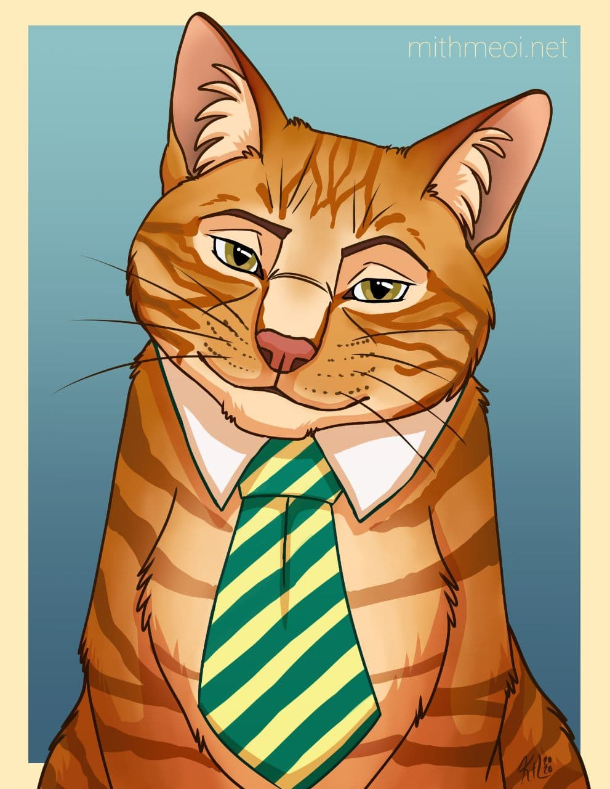
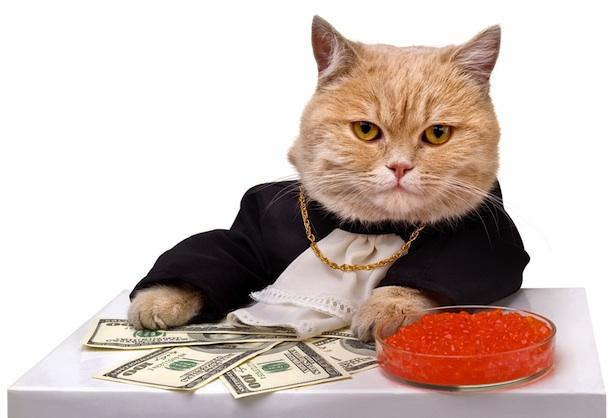
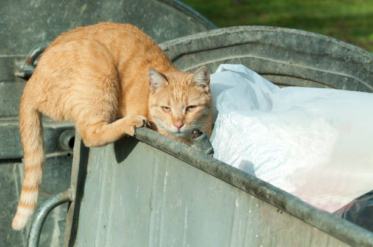

A site generated in appreciation and love for my cat, who is the bane of my existance.
Some of my Cat's Greatest Accomplishments
My cat has achieved many great things over his 11 years. These are just some of the highlights.
Founded Herverd University
My cat, Southie, founded a college. That's not a typo--my cat, an orange tabby, is the
founder and first president of Herverd University. I know what you're thinking: How can
a cat found a university? Aren't colleges typically founded by people?
As it turns out, my cat isn't alone in this accomplishment. According to the U.S.
Department of Education, there are over 4,000 colleges and universities in America that
are either fully or partially accredited. And while 1/2 a percent being founded by
non-human animals doesn't sound like much, that's still 20 different schools...all
founded by animals, and not all pets.
Isn't Herverd just a legally distinct parody of Harvard?
Yes. Why are you asking? Are you a cop? You have to tell me if you are. No further
questions.
Wrote a Best Selling Children's Series
One day, my cat woke me up by scratching my face and jumping on my head. After rolling
out of bed, I made my way to the kitchen where I found him perched atop a pile of
freshly printed books. It was then that I realized he had written a best selling
children's book series, and he can't even read.
The Auborgene Ghost is a series of children's books about a noir detective
that investigates paranormal crimes and mysteries. But, no one would have expected
that the series about a cat solving ghost crimes could've been written by a cat.

Figure 1: Artist's rendering of the author
Owner and Opperator of Southie's Just Pickles, and More!
When asked who the most successful business owner in Marietta, Ohio is, most people
would not say a cat, but they would be wrong. The cat in question, Southie J. Pinkerton,
owns and operates Southie's Just Pickles, And More!, a store that sells high-quality
small batch pickles sourced from around the world at a fraction of the price of other
stores. Thanks to Southie's shrewd business sense and clever marketing tactics (he has a
very active social media presence), his store has been thriving in a post-Covid America.
Saving money by hiring newspaper boys to deliver the pickle jars by hand around the
small town every morning, most residents have grown accustomed to waking to the sound of
shattering glass on their front steps.

Figure 2: The most successful business cat in a small town in Ohio
“I bought the company when my owner/mother was pregnant. I thought to myself:
Southie, this is your big ticket out of this little town. Everyone knows how much
pregnant women like pickles. Turns out...not this one.”
Despite this initial upset, Southie's business has been thriving since he started it up
in 2011. With over nine years of experience in the field, this feline has managed to
build a customer base of over 2,000 people spread out all over the world (if you count
intagram followers and bot accounts). What makes the company so unique is the fact that
he designs all of the brine flavors on a per customer basis.
Mayor of the Dumpster Behind the Philadelphia Ikea
This is the true story of how my cat became the mayor of a town and what that means for
us.
One day several years ago, our family was out walking near our house in Philadelphia
when we saw an orange cat dart out from under a parked car and into a dumpster. We
weren't sure if the cat belonged to anyone or not, so we decided to check it out. As we
approached the dumpster, we could hear a small kitten meowing inside. It had apparently
crawled inside the bin. Using a few pre-wrapped slices of American cheese we were able
to lure the tabby out, wrap him in a shirt and get him to the vet.

Figure 3: The Mayor surveying his town
We still make it a point to go back and visit the dumpster occasionally, a strole down
memory lane of how he and I met.
Turns out, my cat is the mayor of a town, and that town is that dumpster behind the
Philadelphia Ikea. It's a pretty sweet gig--he gets to lounge around all day, sleeping
in the warm sun and batting at the pesky flies. And when he's feeling hungry, there's
always plenty of food to be found in the dumpster.
Sure, it's not glamorous, but my cat is happy and healthy and that's all that matters.
Plus, he's got a pretty good thing going.